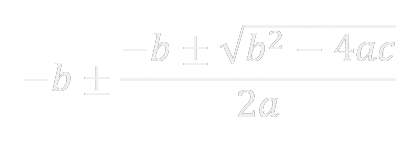

Roots of quadratic equation as per discriminant rule : 
Discriminant : b2 - 4ac
Nature of roots:
Real and equal : Discriminant = 0
Real and Unequal : Discriminant > 0
Imaginary : Discriminant < 0
Rational : Discriminant ∈ R
Integral : Discriminant ∈ Z
Relation between roots and coefficients:
Quadratic equation:
α + β = -b⁄a
α . β = c⁄a
Cubic Equations(ax3 + bx2 + cx + d = 0) :
α + β + γ = -b⁄a
α . β + β . γ + γ . α = c⁄a
α . β . γ = -d⁄a
Let eqn be ax2 + bx + c & a'x2 + b'x + c' and α be the only common root, then:
(ca' - c'a)2 = (ab' - a'b).(bc' - b'c)
If both root are common then:
a⁄a' = b⁄b' = c⁄c'
Maximum value of quadratic equation:
if a > 0, is ∞
if a < 0, is ( -b⁄2a , -D⁄4a )
Minimum value of quadratic equation:
if a < 0, is ∞
if a > 0, is ( -b⁄2a , -D⁄4a )
Qudratic equation in two varible:
Standard form : ƒ(x , y) = ax2 + by2 + 2hxy + 2gx + 2fy + c
it may be resolved into two linear factors if, Δ = abc + 2fgh - af2 - bg2 - ch2 = 0
The number of positive roots of equation is equal to the number of sign changes in ƒ(x), while the number of negative is equal to the number of times the sign changes between terms in ƒ(-x)